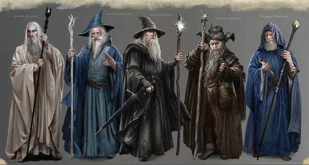

The Future Belongs to the Bold
For too long, our kind has lived in the shadows, bound by laws that stifle our true potential. The Wizards of Grindelwald initiative is more than a gathering—it is a global movement dedicated to the restoration of wizarding sovereignty and the pursuit of ancient magic.

Our Founding Principles
Every member of our circle adheres to the three sacred pillars:
- Visions of the Future: Harnessing prophecy to guide our path.
- Natural Order: Establishing the rightful hierarchy of magical beings.
- The Greater Good: Making the difficult choices today for a brighter tomorrow.
For the Greater Good
Welcome to the definitive archive of the Global Wizarding War and the rise of Gellert Grindelwald.

Our Mission
- The overturning of the International Statute of Sorcery .
- The establishment of a better world.
- The preservation of ancient wizarding traditions.